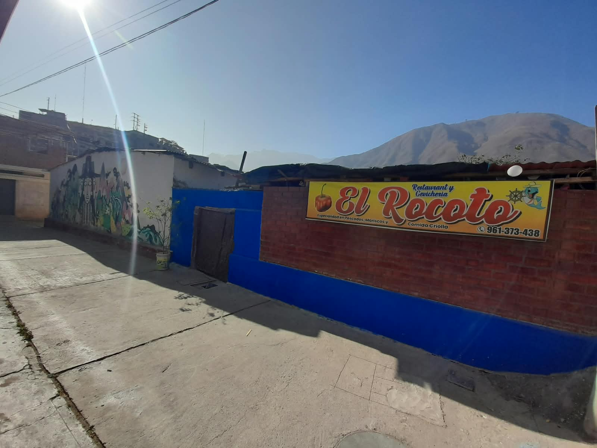

RESTAURANTE
Gastronomía
EL ROCOTO
San Bartolomé, Huarochirí
El Rocoto es el restaurante de San Bartolomé que ofrece aparte de buena atención comidas criollas y marinas, a la vez que también ofrece ser tu restobar favorito para esos momentos amargos